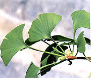
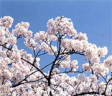
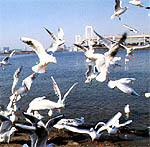

東京について



日本の首都。本州のほぼ中央，関東地方の南西部に位置する。東西に細長い都域を占め，埼玉県，千葉県，神奈川県，山梨県に囲まれ，南東部は東京湾に面する。 23特別区，26市，1郡 (西多摩) ，4支庁 (大島，三宅，八丈，小笠原) から成り，郡，支庁内に5町8村がある。千代田区丸の内にあった都庁は，1991年新宿区西新宿に移転。長禄1 (1457) 年太田道灌が江戸城を築城，天正 18 (1590) 年徳川家康が入府してから急速に発展，江戸時代を通じて日本における武家政治の中心地となった。明治1 (1868) 年新政府が成立し，2年の明治天皇の再度の東京入り以後首都としての実をそなえはじめた。現在は世界最大級の人口をもち，ニューヨーク，ロンドン，パリ，シャンハイ (上海) などと並ぶ国際的大都市に成長している。中央の諸官庁をはじめとする行政機関や金融機関，大企業の本社などが集中。新聞，放送，出版などの文化面，大学，研究機関などの教育・学術面でも日本の中枢をなしている。交通面でも全国の鉄道網，道路網，航空路の一大中心となっている。西部は関東山地に属し，西端に都内の最高峰，雲取山 (2017m) がそびえ，山岳地一帯は秩父多摩甲斐国立公園に属する。中央部は多摩，狭山の丘陵，武蔵野台地で都心部の衛星都市が多く，大規模な多摩ニュータウンをはじめ，多くの団地が建設，大学も移転進出している。明治の森高尾国定公園および6つの都立自然公園 (滝山，高尾陣場，多摩丘陵，狭山，羽村草花丘陵，秋川丘陵) がある。太平洋上の伊豆，小笠原の諸島はそれぞれ富士箱根伊豆国立公園，小笠原国立公園に属している。江戸の里神楽は重要無形民俗文化財。
東京の概要（統計）
関東地方西部中央に位置する首都。西部に山地、中央部に丘陵地と台地、東部に低地がひろがる。太平洋上には伊豆諸島や小笠原諸島がある。気候は比較的温暖。ただし、小笠原諸島は一年中夏のような気候である。第1次産業の就労者数が少なく、第3次産業の就労者数が多い。都花は、ソメイヨシノ。都木は、イチョウ。都鳥は、ユリカモメ。
管轄する領域は東京都区部（東京23区）、多摩地域（26市[注 3]と西多摩郡3町1村）および東京都島嶼部（大島、三宅、八丈、小笠原）の4支庁（2町7村）からなっている。沖ノ鳥島、南鳥島を含む小笠原諸島を含むため、日本最南端および最東端に位置する都道府県でもある。都公認の「東京都」の英語表記はTokyo Metropolis（Tokyo Met.）。他には Tokyo Prefecture と Tokyo Metropolitan Prefecture がある。
人口は14,028,589人（2021年10月1日現在）。これは日本の都道府県の中では人口が最も多く、日本の人口のおよそ11%を占めている。人口密度も都道府県の中で最も高い。東京都を中心とする東京都市圏は人口3700万人を超える世界最大の都市圏である。日本の人口のおよそ3割が集中し、ポーランドやモロッコ、カナダなどの国の総人口に匹敵する。
東京の歴史
昭和18年（1943年）7月からです。
現在の東京は、かつて「江戸」と呼ばれていました。
「東京」という名称が使われるようになったのは、1868（明治元）年のことです。
「東京都」という名称が用いられたのはいつからなのでしょうか。
実は戦時中の1943年7月に東京都という行政区分が登場しました。
1868年から1943年までは、東京「府」という名称でした。
それではなぜ1943年に、東京「都」になったのでしょうか。
そこには、東京市と東京府の二重行政問題（権限や行政効率化の問題）や、戦争遂行上の問題が関係してきます。
現在の東京都は、23区・26市・5町・8村で構成されています。
1893（明治26）年に三多摩地域（西多摩、北多摩、南多摩）が神奈川県から移管され、現在の形になりました。
それ以前は、ほぼ現在の23区の範囲と伊豆・小笠原諸島の地域が東京府でした（伊豆諸島は1878（明治11）年、小笠原諸島は1880（明治13）年にそれぞれ東京府に編入）。
1896（明治29）年には、政府が貴族院に東京都制に関する法案を提出しました（Ref.A15113054000）。
法案では、東京市（麹町区など15区）を「東京都」として独立させ、残りの地域を「武蔵県」として分離させようとしました。
しかし、東京市議会などの反対により、実現しませんでした。
東京都制導入に関する議論は、中央政府の役人を都長官（知事）として派遣し、任命させようとする中央政府・貴族院と、選挙により選ぼうとする衆議院・東京市の対立が存在しました（当時の知事は、政府から派遣された役人が任命されていました「Q&A戦前の知事はどのようにきめたの？」をご参照ください）。
前者は中央政府の役人を派遣することで、政府の意に沿った都政を実行しようとする意図がありました。
後者は長官を選挙で選ぶことで、地方自治の拡大を目指す意図がありました。
1923（大正12）年9月1日、関東大震災が発生しました。
東京府内では、約7万人の死者行方不明者を出しました。
後藤新平を中心として「帝都復興事業」（1923年～1930年）が開始され（Ref.A15060092100）、近代的な都市計画のもとに運河・道路・公園の整備が進みました。
東京市とその周辺は、震災から復興する過程で、人口の増加が進みました。
東京市と周辺の町村はそれぞれ管轄が異なるため、包括的な行政を実行できませんでした。
そのような状況を打開するため、1932（昭和7）年の段階で、東京市は周辺の82カ町村と合併し、「大東京」（35区）が成立しました。
この合併の結果、東京府の人口の約93％が東京市の住人となり、府税総額の約96%を東京市民が納めることになりました。
東京府と東京市の職掌事務の分担を明確にする必要が更に強まりました。
その解決策として期待されたのが東京都制でした。
1923年の都制案では、衆議院議員鳩山一郎が中心となり、都知事の公選などが計画されましたが、政府の支持を得られずに失敗しました。
昭和に入っても東京都制導入の議論や調査が進められましたが、都長（知事）の選出方法などをめぐる対立から、事態は進展しませんでした。
事態を打開したのが、戦争を背景とする挙国一致を求める風潮でした。
東京都制は、1943（昭和18）年7月1日に実施されます（Ref.A14101068400）。
実に約半世紀にわたってもめた都制問題が、一応の決着がつきました。
東京都は従来の東京府の範囲と定められ、東京市が廃止となります。
東京府議会と東京市議会は廃止となり、新たに東京都議会が発足し、選挙がおこなわれました。
空襲により焦土と化した東京は、一日も早い復興が望まれました（東京や全国の復興については、「Q&A戦争で破壊された街はどうやって復興したの？」をご参照ください）。
翌46年9月27日に東京都制は改正されました。
この改正では、自治権の拡大がうたわれました。
戦時中の都制下では、区は東京都の内部組織となっていましたが、戦後は区長が公選となり条例を制定することができるようになりました。
戦前の区は35ありましたが、1947年8月の段階で現在と同じ23区に整理統合されました。
同年に地方自治法が施行されると、都道府県知事は現在と同じ公選となりました。
2020年に東京オリンピック・パラリンピックが開催されます。
東京での開催は、1964年に続く2回目です（1940年にも東京オリンピックが開催される予定でしたが、戦争により開催中止となりました。詳しい模様は、「オリンピックと日本」アジ歴ニューズレター第20号や、インターネット特別展「知ってなるほど 明治・大正・昭和初期の生活と文化」内の「東京オリンピック、1940年 ～幻のオリンピックへ～」や、インターネット特別展「『写真週報』にみる昭和の世相」内の「幻の東京オリンピック」をご参照ください）。
1964年の東京オリンピックでは、東京の街並みは大きく変化しました。
実は、東京都制は1947年から幾度となく改正されています。
東京は日々変化し、私たちの生活も変わり続けます。
それに合わせて、東京都も変化し続けるのかもしれません。
東京のシンボル
|
| |
都の花「ソメイヨシノ」 |
| |
| 都の木「イチョウ」 | |
都の鳥「ユリカモメ」 |
| |